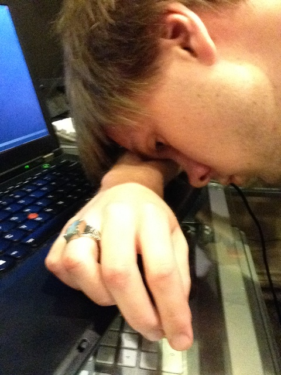

It's been a really busy week of late nights. There are only two more weeks left, and on my list of things ot do is still quite long. My goals for the rest of the summer are to set up the new gateway (still haven't finished with that), to document everything, and to automate more of the things.

My plans for testing the gateway out were foiled by a failed power supply. I've now got a fully testable configuration written, but the machine won't even turn on. Hopefully one will be coming in the mail this week so that, if and when things go wrong, I've got the time to set it right before I have to leave.
Last week, we had some guests. The Parks are a missionary couple that are staying in Richardson for the coming year. I met them several weeks ago at the conference, but they stopped by the Wallace farm for a night. And since they live in Richardson, only a few blocks from UTD, I know I'll get to see them again, too!
Well, I'm tired, and there's more work to do. So, back to more configurations!